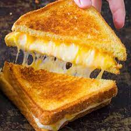

Jen's Grilled Cheese

Description
This classic recipe was perfected during Jen's time overseas studying the
grazing habits of the wild bread cow.
You can't eat just one.
Ingredients
- Sliced bread
- Cheese
- Butter
Steps
- Butter the outsides of the bread.
- Place cheese slices between 2 slices of bread.
- Grill in pan until cheese is melty and bread is toasted.